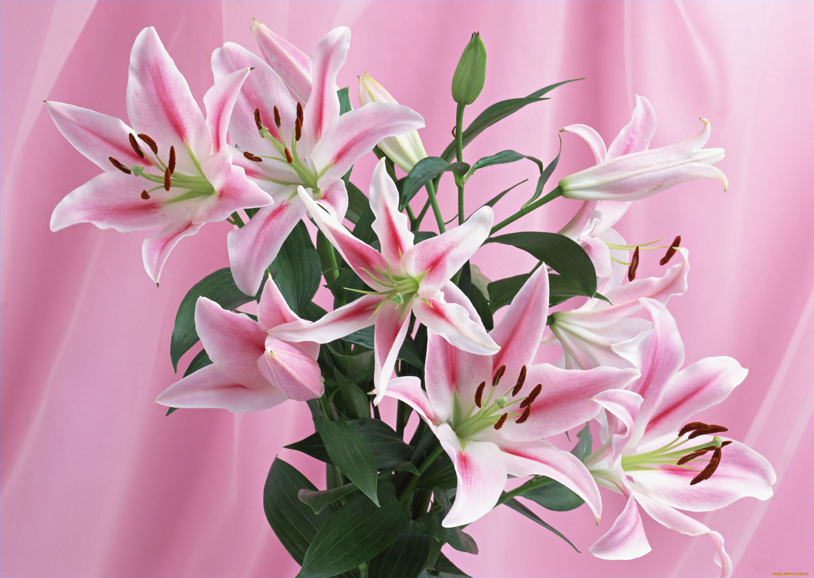

Немного о лилиях
Лилии
- это род травянистых цветковых растений, растущих из луковиц, все с большими нежными цветками.
Они из ряда тех цветковых растений, которым посвящено много произведений живописи и литературы в разных странах мира.
Лилии имеют массу окрасок. Они могут быть:
- белыми,
- розовыми,
- желтыми.
а также встречаются белые лилии с розовыми полосками, крапинками и горошками.
Основные виды лилий:
- Азиатская
- Кудреватая
- Белоснежная
- Американская

Самый большой выбор прекрасных цветов - в нашем магазине!